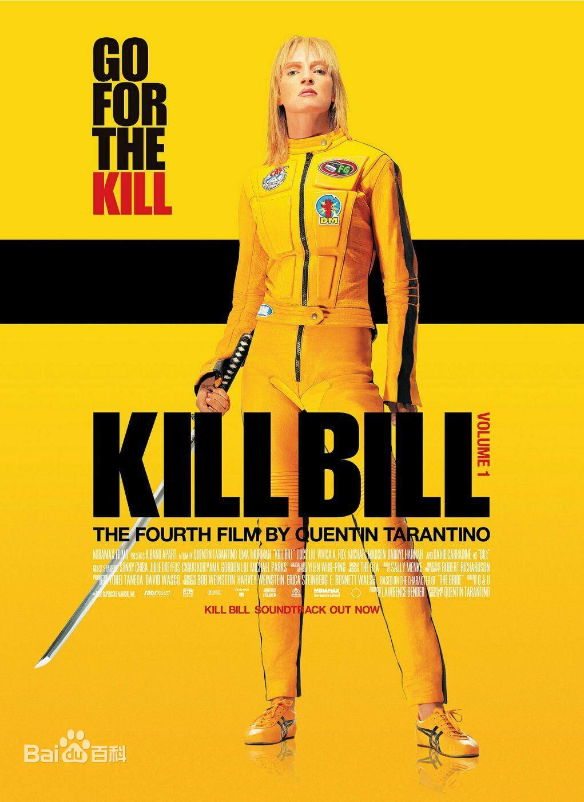

| Name : Quentin Tarantino | Constellations : Aries |
| Nationality : The US | Profession : Director, screenwriter, actor |
| Nation : Italian descent | Marital status : Married |
| Birthplace : Knoxvill Tennessee | Height : 189cm |
| Birthday : March 27, 1963 |
In 1985, Quentin Tarantino wrote his first play, Captain prechfuzz and anchovies robber, based on an absurd dream; In the same year, Quentin Tarantino took part in the family comedy golden girl season 1 。
In 1986, Quentin Tarantino found several clerks in the audio-visual store and shot the short film debut "my best friend's birthday" in a rough way, but before several people had seen the film, the film was almost completely destroyed in a fire accident. However, the director's experience has also accumulated valuable film experience for him. So, in the next two years, he wrote two official screenplays, fatal romance and natural killer.
In 1991, Quentin Tarantino received $50000 from the sale of the script of fatal romance and began to prepare for the film. During this period, he left the video rental store and began to adapt for a small film and television company called "cine Tel". Here, he met producer Lawrence band, and they formed a film production company called "band apart".
In 1992, Quentin Tarantino's crime thriller "drowning dog" premiered at the Sundance Film Festival.
In 1994, he directed the crime film vulgar novel co starring Bruce Willis, UMA Thurman and John Travolta, which won the Golden Palm Award at the 47th Cannes International Film Festival, and Quentin Tarantino won the best original screenplay award at the 67th Academy Awards.
In 1995, he co directed the short film collection four rooms with Robert Rodriguez, Alison Anders and Alexander Rockwell; In the same year, Quentin Tarantino guest starred in the action thriller "the three steps to murder" directed by Robert Rodriguez.
In 1996, he starred with George Clooney in the action horror film "killing dawn", which was written by him.
In 1997, he wrote and directed the crime film dangerous relationship, which was co starred by PAM Greer, Samuel Jackson and Robert foster.
On March 14, 1998, the comedic film "witty words in a hilarious house" was released.
On March 16, 1999, the action thriller horror film "bloodthirsty maniac" as a producer was released.。
On January 18, 2000, the producer's action thriller from dusk to dawn 3 was released.
On September 30, 2001, the Spy Drama "double faced female spy Season 1" premiered.
On September 29, 2002, the Spy Drama "double faced female spy Season 2" was broadcast.
In 2003, he wrote and directed the action thriller crime film Kill Bill starring UMA Thurman and David karadin, which won the best action / adventure / thriller film of the 30th Saturn Award.
On April 16, 2004, the action thriller crime film Kill Bill 2 was released, which won the best action / adventure / thriller film of the 31st Saturn Award; In May, he was invited as the chairman of the jury of the 57th Cannes International Film Festival.
In 2005, he co directed with Frank Miller and Robert Rodriguez the crime thriller City starring Jessica Alba, Bruce Willis and cliff Owen, which was nominated for the Golden Palm Award at the 58th Cannes International Film Festival.
On September 7, 2006, the documentary "roar of freedom", as a producer, was released.
On April 6, 2007, the action thriller horror film "prison" directed in cooperation with Robert Rodriguez was released. Quentin Tarantino was responsible for the part called "evidence of death". After the partition of "prison", this part premiered at the 60th Cannes International Film Festival on May 22 of the same year and was nominated for the Golden Palm Award.
On August 8, 2008, the action thriller hell knight, as a producer, was released.
In 2009, he co directed the war film "shameless bastard" co starred by Melanie Roland, Brad Pitt and Diane Kruger with Eli Ross. The film won the nomination for best film at the 82nd Academy Awards and the nomination for best film in the film plot category at the 67th American film and television Golden Globe Awards, Quentin Tarantino was nominated for best director in the 82nd Academy Awards and best director in the film plot category in the 67th American film and television Golden Globe Awards.
In 2011, he appeared in the documentary Coman's world.
On October 7, 2013, Quentin Tarantino won the world best director award of the 10th Huading award.
In 2012, he wrote and directed the western action film "saved ginger", CO starring Jamie fox, Christopher Waltz and Leonardo DiCaprio. The film won the nomination for best film at the 85th Academy Awards and the nomination for best film in film plot at the 70th American film and television Golden Globe Awards, Quentin Tarantino won the best original screenplay award at the 85th Academy Awards and the best screenwriter award in the film plot category at the 70th American film and television Golden Globe Awards.
In 2015, he wrote and directed the western action film eight villains, CO starring Kurt Russell, Samuel Jackson and Jennifer Jason Lee. Quentin Tarantino won the nomination of best screenwriter in the film category of the 73rd American film and television Golden Globe Award for this film.
On July 26, 2019, the self-made and directed crime film "Hollywood past" was released, starring Leonardo DiCaprio and Brad Pitt, and won the best film award in Music Comedy at the 77th American film and television Golden Globe Award, while Quentin Tarantino won the best screenplay award in film category; In December, he was rated as the "top ten directors of the year" by the British guardian.
In June 2021, the 16th Rome Film Festival announced the winners of the lifetime achievement award. Quentin Tarantino and director Tim Bolton won the lifetime achievement award together.

Parents
Quentin Tarantino's father was Italian, while his mother was half Irish and half Indian. Both of them are film lovers, and the name "Quentin" comes from the role played by Bert Renault in fireworks.
Marriage
On the evening of June 30, 2017, Quentin Tarantino was engaged to Israeli singer and model Daniela pick, the daughter of Israeli musician Zvika pick, in Los Angeles.
On November 28, 2018, Quentin Tarantino and Daniela pike married in Los Angeles. On February 23, 2020, Quentin Tarantino's wife Daniela pike gave birth to their first child, a boy.


| Oscar Golden Statuettes |
|---|
| 2020 92nd Best Picture award Once Upon A Time In Hollywood (Nomination) |
| 2020 92nd Best Original Screenplay award Once Upon A Time In Hollywood (Nomination) |
| 2020 92nd Best Director award Once Upon A Time In Hollywood (Nominated) |
| 2013 85th Best Picture award Django Unchained (Nominated) |
| 2013 85th Best Original Screenplay award Django Unchained (Award Winning) |
| 2010 82nd Best Original Screenplay award Inglourious Basterds (Nominated) |
| 2010 82nd Best Picture award Inglourious Basterds (Nominated) |
| 2010 82nd Best Director award Inglourious Basterds (Nominated) |
| 1995 67th Best Original Screenplay award Pulp Fiction (Award Winning) |
| Festival De Cannes |
|---|
| 2019 72nd Golden Palm Award Once Upon A Time In Hollywood (Nomination) |
| 2009 62nd Golden Palm Award Inglourious Basterds (Nomination) |
| 2007 60nd Golden Palm Award Death Proof (Nomination) |
| 1994 47nd Golden Palm AwardPulp Fiction (Nomination) |
Quentin Tarantino's works always give people varying degrees of satisfaction from the perspective of watching the excitement or from the perspective of watching the profession. He is talented, familiar with all kinds of film languages and film types, but he has never been bound by any rules. His works are never perfect and always have sharp edges and corners. However, all kinds of high scenes can make fans experience unprecedented excitement and happiness. (commented by Hainan Daily)
In Quentin Tarantino's works, stylized violence is everywhere. Although many films involve violence, no director is as addicted to it as he is. Quentin Tarantino's violence aesthetics inherits the banter and ritualization in clockwork orange and the truth and cruelty in taxi driver. On this basis, it gives new connotation and produces its own unique characteristics. Therefore, he led the trend of film violence aesthetics in the 1990s . (commented by new express)
Quentin Tarantino is good at telling stories in a non-linear way, expressing black humor in extreme ways, and deconstructing everything heartlessly. In his films, there is no great significance and no characters that need to be positively portrayed. If he can make the audience laugh, he will never have hypocritical pity for his characters. In addition, his techniques of segmenting the structure of the play from the viewpoint and using sound editing for story cohesion have had a far-reaching impact on the future films . (Sohu Entertainment review)